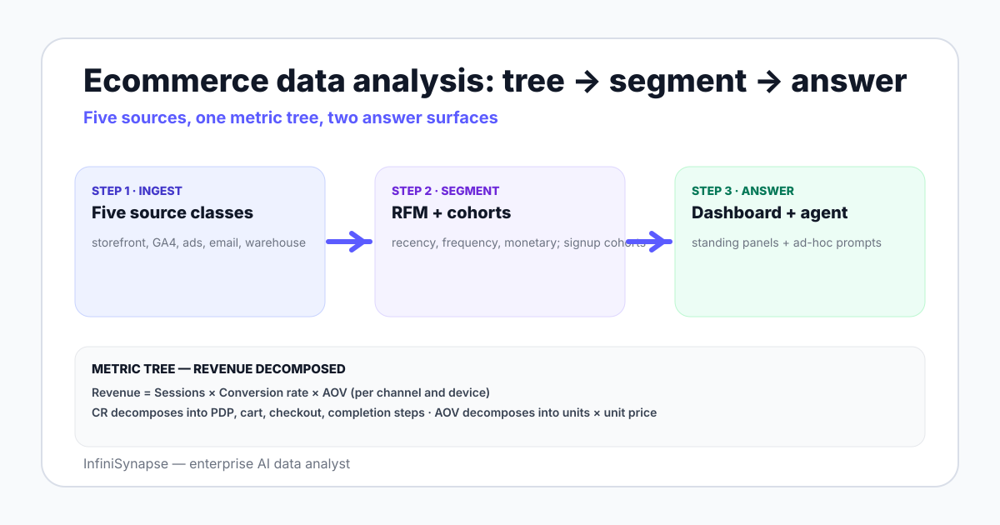

Ecommerce Data Analysis in 2026: The Working Playbook
A working playbook for ecommerce data analysis in 2026 — sources from Shopify to GA4, RFM and cohort methods, the metric tree, tool ladder, and where AI agents earn the seat.
AuthorInfiniSynapse Research, product and data architecture team
Published2026-06-28 · Last verified 2026-06-28 · Next review 2026-09-28
Evidence baseShopify and BigCommerce analytics documentation, Google Analytics 4 reference, public ecommerce benchmark studies, dbt analytics engineering patterns, and field experience across operating ecommerce teams.
Disclosure: This page is published by InfiniSynapse, an enterprise AI data analyst used by ecommerce teams. The playbook is written to apply whether or not you use our product — the metric tree, segmentation methods, and tooling ladder are vendor-neutral.
TL;DR
Ecommerce data analysis combines Shopify or BigCommerce or Magento order data, GA4 web analytics, ad platform spend, and the warehouse — reconciled to a metric tree of revenue, AOV, conversion rate, repeat rate, and LTV.
RFM segmentation (recency, frequency, monetary value) is the most useful customer segmentation framework — five SQL steps from orders to a per-customer segment label.
Cohort retention measures the share of a signup cohort still active at week N; ecommerce teams plot this monthly and use it to evaluate channel quality.
Funnel diagnostics decompose the path from catalog view to checkout completion; the drop-off shape, segmented by device and channel, points to where investment matters.
AI data agents earn the seat on ad-hoc anomaly questions — "why did AOV drop on Wednesday?" — that do not fit pre-built dashboards. Connect the warehouse, bind a knowledge base of business definitions, ask in plain English.
Ecommerce data analysis is the practice of combining order data from Shopify or BigCommerce or Magento with GA4 web analytics, ad platform data, and the warehouse to answer recurring questions about revenue, AOV, conversion rate, repeat rate, LTV, and channel performance. RFM segmentation and cohort retention are the two most useful framings. AI data agents add open-ended exploration on top.

Sources every ecommerce stack pulls from
Storefront platform. Shopify (most common), BigCommerce, Magento, WooCommerce, or a custom storefront. Orders, line items, products, customers, refunds.
Web and product analytics. GA4 with the BigQuery export turned on, supplemented by Hotjar or FullStory for qualitative session replay if needed.
Email and SMS. Klaviyo, Postscript, or platform native — campaign sends, opens, clicks, attributed revenue.
Warehouse. The reconciled view — Snowflake, BigQuery, Redshift, or a Postgres data warehouse via Fivetran or Hightouch reverse-ETL.
The warehouse is where order data, web sessions, and ad spend land in canonical form, modeled by dbt or a transformation tool. Storefront UI exports are useful for spot checks; the warehouse is the ground truth for cross-cut analysis.
The ecommerce metric tree — revenue at the top, controllable inputs at the bottom
The metric tree decomposes revenue into the controllable inputs an ecommerce operator can move:
Revenue
= Sessions × Conversion rate × AOV
= (Paid sessions + Organic sessions + Direct sessions) × CR × AOV
= ... where each session source has its own CR and AOV profile
Below that, AOV decomposes into units per transaction × average unit price. Conversion rate decomposes into product-view-to-add-to-cart, add-to-cart-to-checkout, and checkout-to-completion. The tree is the contract — every dashboard panel, every analyst investigation, and every AI agent prompt should be traceable to one node in this tree.
The five metrics that move a quarterly review
Revenue and revenue growth rate (week, month, quarter)
AOV and AOV trend by channel and customer segment
Conversion rate by device and traffic source
Repeat purchase rate and 90-day retention
Customer acquisition cost and LTV-to-CAC by channel
RFM segmentation in five SQL steps
RFM is the most reliable customer segmentation framework for ecommerce — Recency (days since last order), Frequency (orders in the period), Monetary value (spend in the period). Five SQL steps from raw orders to a per-customer segment label:
-- Step 1: per-customer base metrics over the last 365 days
WITH base AS (
SELECT customer_id,
DATE_DIFF(CURRENT_DATE, MAX(order_date), DAY) AS recency_days,
COUNT(*) AS frequency,
SUM(total_amount) AS monetary
FROM orders
WHERE order_date >= CURRENT_DATE - INTERVAL '365 day'
GROUP BY customer_id
),
-- Step 2: percentile buckets
ranked AS (
SELECT customer_id,
NTILE(5) OVER (ORDER BY recency_days ASC) AS r_score,
NTILE(5) OVER (ORDER BY frequency DESC) AS f_score,
NTILE(5) OVER (ORDER BY monetary DESC) AS m_score
FROM base
)
SELECT customer_id, r_score, f_score, m_score,
CASE
WHEN r_score >= 4 AND f_score >= 4 AND m_score >= 4 THEN 'Champions'
WHEN r_score >= 4 AND f_score >= 3 THEN 'Loyal'
WHEN r_score <= 2 AND f_score >= 3 THEN 'At-risk'
WHEN r_score <= 2 AND f_score <= 2 THEN 'Lost'
ELSE 'Potential'
END AS segment
FROM ranked;
The segments become the unit of marketing addressability — Champions get loyalty offers, At-risk get reactivation, Lost get a final win-back. Wire the segment column into your CRM via reverse-ETL and you have closed the loop.
Cohort retention and repeat purchase analysis
Cohort retention answers "of customers acquired in month M, what share placed an order in month M+N?" Three patterns ecommerce teams care about:
Month-1 repeat rate. The share of a new-customer cohort that buys again in the 30 days after first purchase. Single most predictive number for LTV.
90-day retention. The share of a cohort active 90 days post-first-purchase. Smooth weekly noise; reveal channel quality.
12-month LTV curve. Cumulative revenue per cohort across 12 months — the basis for the LTV/CAC ratio in board decks.
Channels with high acquisition counts but low month-1 repeat rates are the most common over-investment trap. Read the cohort table before reading the ROAS dashboard, not after.
Funnel diagnostics from catalog view to checkout completion
Step
Median CR (2026 benchmark)
Common failure mode
Session → Product view
45–60%
Weak category navigation or homepage merchandising
Product view → Add to cart
8–12%
Price, stock, or social proof on the PDP
Add to cart → Checkout start
55–70%
Cart UX, shipping surprise, account-required wall
Checkout start → Order complete
50–65%
Payment failure, address validation, slow page
Segment the funnel by device — mobile vs desktop — and by traffic source. Most ecommerce funnel work lives in the segmentation, not the headline numbers. The drop-off shape, not the absolute conversion rate, is the diagnostic.
You can describe a question in plain English and want the SQL drafted, run, and verified for you
—
The graduations are forced by question shape, not by ad spend size. A small team with complex cross-source questions belongs on rung 3 sooner than a large team selling one SKU.
Where AI data agents earn the seat in ecommerce analytics
Three concrete patterns where an AI data analyst changes the workflow:
Anomaly investigation. AOV drops 8% on Wednesday. The dashboard shows the drop. The agent decomposes by SKU, channel, device, and discount code in one prompt, returns the four candidates that explain the drift, and shows the SQL it ran for each. Half-day query session becomes 15 minutes.
New-question onboarding. A merchant asks "which products bought together drove the highest 90-day LTV?" — a question no dashboard pre-builds. The agent uses the bound knowledge base to map "bought together" to a basket join, "90-day LTV" to the cohort table, and produces a ranked list.
Cross-source reconciliation. GA4 attributed revenue and warehouse paid revenue disagree by 6%. The agent quantifies the gap, points to the join key where it lives, and surfaces the rows on each side that should match and do not.
The pattern is the same as elsewhere — dashboards answer the standing 80%, agents answer the ad-hoc 20%. Both belong in the stack; neither replaces the other. See the AI database query pillar guide for the connection pattern and read database + knowledge base binding for why the bound layer matters.
Ask an open-ended ecommerce question across your warehouse
Connect a Postgres, MySQL, BigQuery, or Snowflake warehouse read-only. Bind a small knowledge base of business definitions — what "active customer" means, which orders count, which channel groups roll up where. Then ask one question the dashboard does not answer.
Ecommerce data analysis is the practice of combining storefront order data from Shopify or BigCommerce or Magento with GA4 web analytics, ad platform spend, email and SMS data, and the warehouse to answer recurring questions about revenue, AOV, conversion rate, repeat rate, LTV, and channel performance. The work is anchored to a metric tree where revenue at the top decomposes into the controllable inputs an operator can move.
What data sources do ecommerce teams analyze?
Five source classes: the storefront platform itself (Shopify, BigCommerce, Magento, WooCommerce) for orders and line items, web and product analytics (predominantly GA4 with the BigQuery export turned on), ad platforms for spend and conversions, email and SMS platforms like Klaviyo for campaign performance, and the warehouse where everything reconciles through ELT and a dbt model layer.
What is RFM segmentation in ecommerce?
RFM is a customer segmentation framework based on Recency (days since last order), Frequency (orders in the period), and Monetary value (spend in the period). Each customer gets a 1-to-5 score on each dimension, and combinations produce segments like Champions, Loyal, At-risk, Lost, and Potential. The segments become the unit of marketing addressability when piped into a CRM via reverse-ETL.
What is the most important ecommerce retention metric?
Month-1 repeat rate — the share of a new-customer cohort that places a second order within 30 days of the first — is the single most predictive number for cohort LTV. Teams that anchor channel investment decisions on month-1 repeat rate rather than raw ROAS catch low-quality channels earlier and avoid the most common over-investment trap.
What are common ecommerce data analysis examples?
Examples include cohort retention curves by acquisition channel, RFM segmentation feeding lifecycle marketing, funnel diagnostics from product view to checkout completion segmented by device and traffic source, basket analysis for cross-sell, attribution audits comparing GA4 and warehouse, and AOV decomposition by SKU and discount code. Each example sits under one node of the ecommerce metric tree.
How do AI data agents help ecommerce data analysis?
AI data agents handle ad-hoc anomaly investigation, new-question onboarding for non-analyst merchants, and cross-source reconciliation work that does not fit a pre-built dashboard panel. The pattern is to let the dashboard cover the standing eighty percent of recurring questions and let the AI agent answer the twenty percent of ad-hoc questions where no dashboard exists yet.
What does a working ecommerce dashboard contain?
A working ecommerce dashboard has six standing panels: revenue and revenue growth rate, AOV and AOV trend by channel and segment, conversion rate by device and traffic source, repeat purchase rate and 90-day retention, customer acquisition cost and LTV-to-CAC by channel, and a funnel diagnostic from session to order complete. The panels are the contract; the agent answers questions outside that contract.
Methodology and review notes
Last updated: 2026-06-28 · Next scheduled review: 2026-09-28
This playbook synthesizes Shopify and BigCommerce analytics documentation, Google Analytics 4 reference docs, the dbt analytics engineering guide, public ecommerce benchmark studies, and field experience across operating ecommerce teams running on Snowflake, BigQuery, and Postgres warehouses. The RFM SQL pattern, the cohort retention framing, and the tool ladder reflect observed practice across multiple teams.
Conflict of interest: InfiniSynapse publishes this guide and sells an enterprise AI data analyst. To reduce bias, the page leads with the topic itself, treats InfiniSynapse as one option among many, and links to external sources for every numeric claim.
Update cadence: Reviewed every 90 days for accuracy and link health.